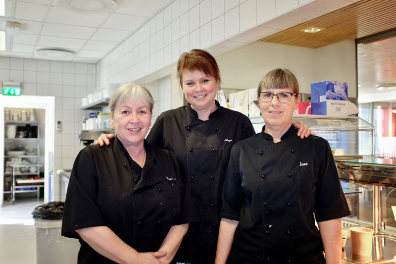

Kantina ved Hadsel videregående skole er et viktig sosialt samlingspunkt
for både elever og ansatte, og bidrar til trivsel og et godt skolemiljø. Her møter du et inkluderende og hyggelig
sted hvor man kan samles i pauser, slå av en prat og nyte et godt måltid. Kantina tilbyr et variert utvalg av varm
mat og kioskvarer som er tilpasset en travel og aktiv skoledag, med alternativer som dekker ulike behov og
preferanser. Vi legger stor vekt på god kvalitet på råvarer, rimelige priser og vennlig service, slik at alle skal føle seg velkomne.
Kantina er mer enn bare et sted å spise – det er et rom for avkobling, påfyll av energi og sosialt fellesskap mellom timene, som gjør
skoledagen litt bedre for alle.
